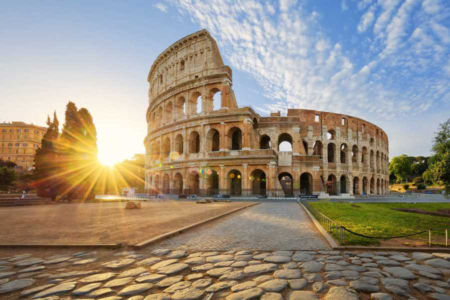

✈️ En unos días... DESPEGUE
Próximo destino... ¡ROMA!
Cuenta atrás para perdernos por sus calles, disfrutar de buena comida y, lo más importante... ¡Disfrutar juntos!

--Días
--Horas
--Minutos
Benvenuti a Roma! 🇮🇹✨
17–22 octubre · Il viaggio
Roma, día a día
Pulsa en un día para ver, de un vistazo, las paradas principales del itinerario. Monumentos, barrios, paseos y ese momento de cerveza que también cuenta.